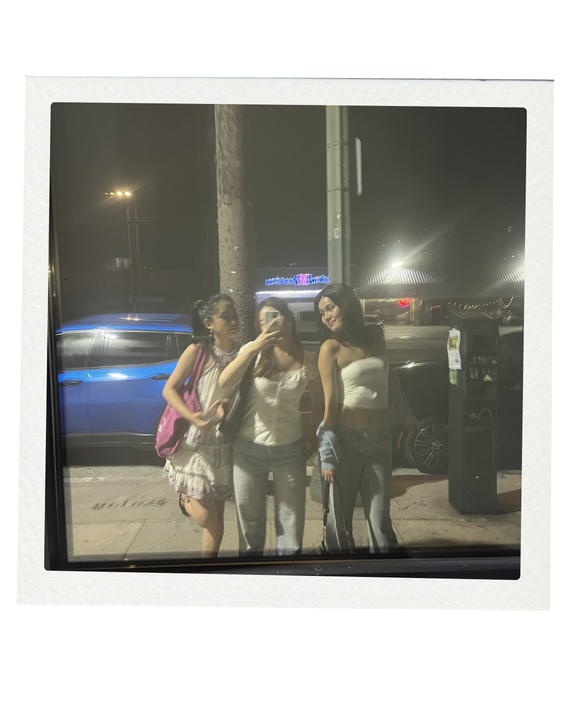
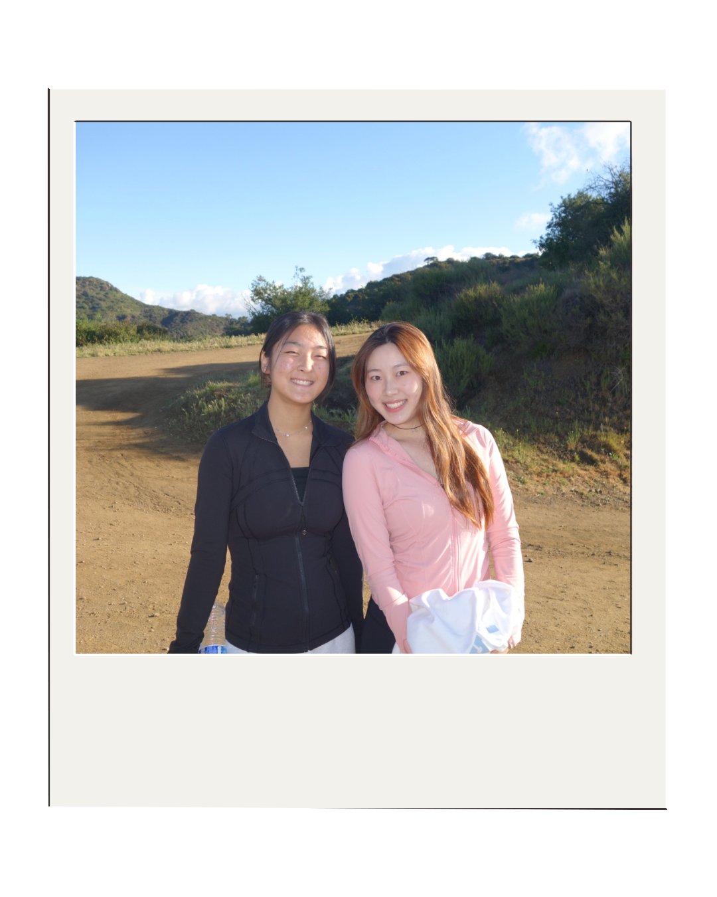
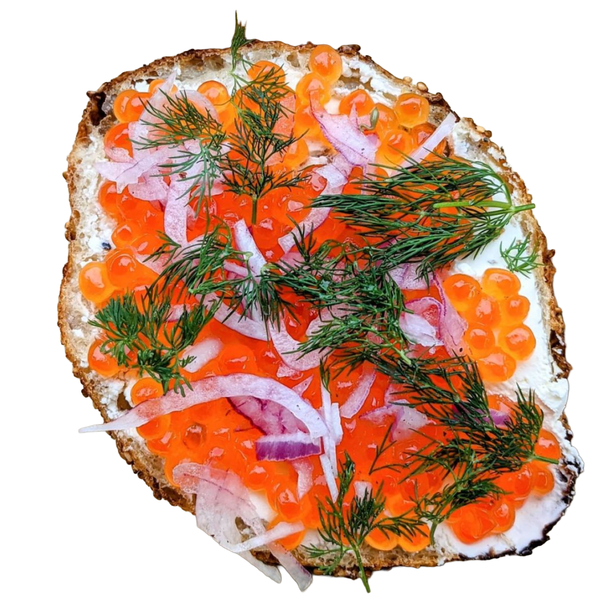
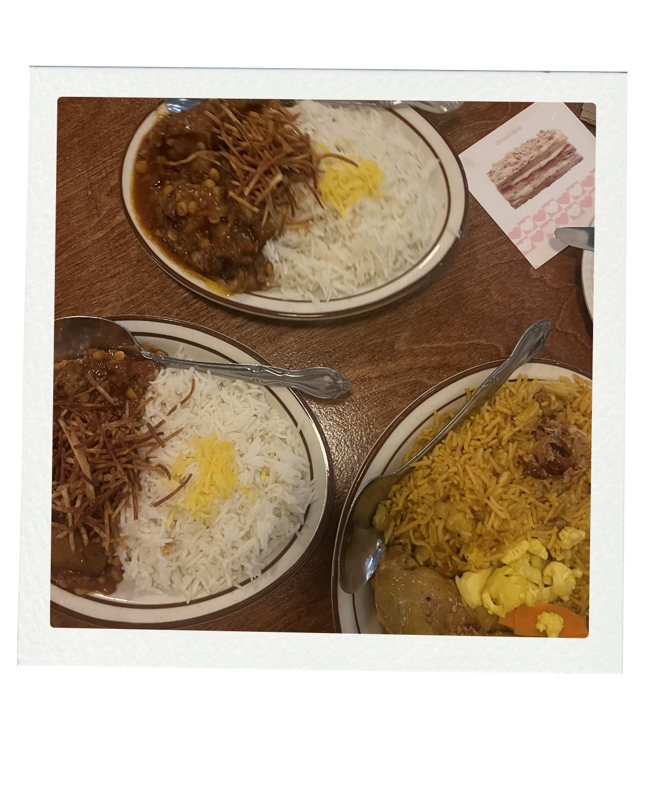

Dear Los Angeles
about
neigborhoods
archives
check out other neighborhoods
Silverlake





There's a version of a perfect LA morning that goes like this: up at 7am, Griffith Park, the city still quiet, and then down the hill to Courage before the line gets impossible. That's how I found my favorite bagel in Los Angeles. Courage does Montreal-meets-California style which sounds like it shouldn't work and absolutely does. I always get the Run It Through the Garden or the Roe, depending on my mood, and both have never once let me down. If you love bagels even a little bit, this place is non-negotiable.
Courage Bagels
Azizam
I found Azizam the way I find a lot of places, down a Google Maps rabbit hole looking for Persian food. Something about the photos made me save it immediately. When my friend came back to visit LA, it felt like exactly the right place to take her. Cozy, casual, the kind of spot where you order homestyle Persian food and suddenly two hours have passed because the conversation just kept going. Azizam has that quality where the food and the atmosphere do the work for you. All you have to bring is someone you've missed.